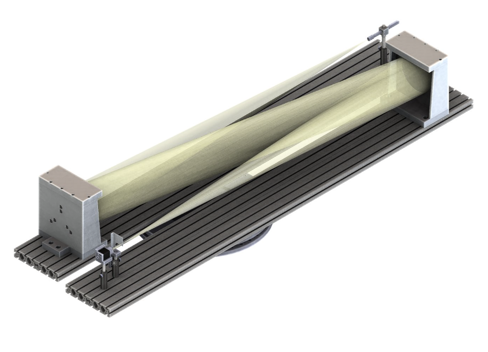
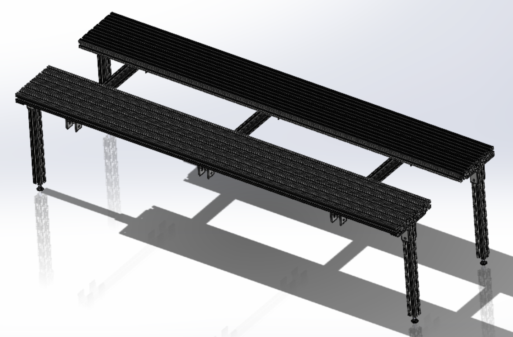

Schlieren Imaging System
GT Advanced Manufacturing Pilot Facility


Overview
- Visualize interaction and movement of Argon gas during DED print processes
- Schlieren imaging visualizes gas through variations in density
- Gas pressure variations can cause reduced print quality
- Visualize gas flow patterns at different angles with a rotatable system
My Role
- Designed multiple custom mounts and adapters in SolidWorks
- Used DFM and DFA principles to ensure alignment, accessibility, and stability
- Using rapid prototyping, 3D printing, and functional testing to validate designs
- Produced manufacturing-ready drawings
- Contributed to system manufacturing using bandsaws and mills
- Integrated various parts with larger system
- Assisted with system calibration
- Conducted experiments on Optomec DED platform to visualize gas flow across multiple nozzle
geometries, orientations, and environments (air vs. argon)
- Altered system design for RPMI DED platform
Skills
SolidWorks
DFM
DFA
Rapid Prototyping
Machining
Manufacturing Drawings
Research Experimentation